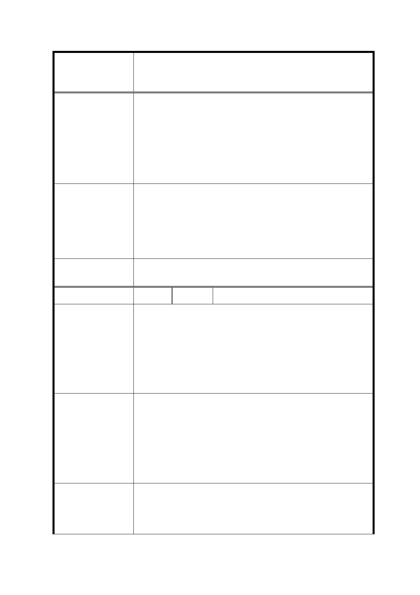

修訂臺北市信義計畫地區細部計畫（第三次通盤
案 名 檢討）案
鼓勵創新及優秀的建築設計，經台北市都市設計及土地開發許
可審議委員會認可設計規劃有地標性、創新性、增加都市美感、
建 議 辦 法 創造良好都市空間時，給予適當容積獎勵。 比照「台北好好看」
計劃的精神，鼓勵地標性建築及優質都市空間，增加台北市的
國際能見度及競爭力。請 委員審查時參考，謝謝!
本計畫區範圍內基地之建築開發均應配合區域發展整體規劃、配
市 府 回 覆 意 見 置及設計，且原本即應考量創意及美觀效果，並經過本市都市設
計及土地使用開發許可審議委員會討論及審議，故不宜再另行給
予額外容積獎勵。
委 員 會 決 議 依市府回應意見辦理。
編
號 12
陳情人 詹○立
我是住在信義區的里民，我希望信義區能像其他國際城市一樣
熱鬧繁榮，但是新舞台常常沒演出，就算有表演去的人也不多，
陳 情 理 由 每次經過黑黑的就像一個空置蚊子館在熱鬧的信義計畫區是不
對的。市政府是不是應該多聽聽信義區民眾的心聲跟想法? 而
不是口口聲聲說為市民建設可看表演的空間可是最後都一樣成
為空置的蚊子館。
應該開放作更新更多元的商業使用，連結 A9、A8、A11 的徒步
區，創造出有台灣特色的娛樂區，娛樂商業區也能有商業特色；
建 議 辦 法 如上海的新天地、北京的三星屯、香港的蘭桂坊等都是結合商
業與古蹟與文化很好的範例。反觀台灣的松菸與華山文創特
區，用意都很好卻無法達到商業及文創兼顧的目標，沒有商業
帶來人潮，文創只是口號。
本次通盤檢討係依 102 年 12 月 30 日｢臺北市文化資產審議委員
市 府 回 覆 意 見 會第 54 次會議｣決議登錄「新舞臺」為本市文化景觀，並附帶決
議｢於新舞臺所在基地維持原表演空間機能，未來使用如有變
更，需提送臺北市文化資產審議委員會審議｣，故配合修訂計畫
32